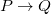
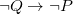
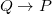
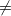
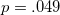
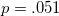

| 伝えるための心理統計 |
| 伝えるための心理統計 |
 の設定 →
の設定 →  値 → を棄却 or 採択
値 → を棄却 or 採択
「計算された統計量が偶然と考えられる範囲を超えることはどれくらいあるか？」
と →
→  → or を棄却
→ or を棄却
|  |  |
(2.1) | ||
|  |  |
(2.2) | ||
|  |  |
(2.3) |
「差がない」ことを確かめたいこともあるはずだが、検定ではが正しくないとわかるのがせいぜい。
「が真 → Q」のとき、「 → が真」とは言えないので、「が偽 → Qでない」のとき、「である → が真」と言わないといけない
は常に偽であるTukey (1991)「違いは小数点以下のどこかには必ずある」
は定数と考えるので、この確率は考えられない
1931年には、Tylerがすでに statistical significance  social significance を主張
値は、効果の大小や関係性の強さに関する情報を一切与えない
とで何が決定的に違うのか？
検定によって、研究内容が限定される。（「差がない」ことを取り上げない）
大標本で値は小さくなる
有意水準という明確な基準がある
二値的な判断こそ実験では知りたい（ CI重視の立場）
CI重視の立場）
| 伝えるための心理統計 |